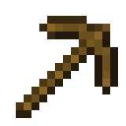
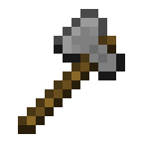
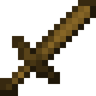

回首頁
Homepage
遊戲玩法介紹
How to play
遊戲生態域介紹
Biome in Minecraft
遊戲道具介紹
In - game item
點擊縮圖查看詳細介紹！

鎬
在《Minecraft》的世界裡，「鎬」是一項不可或缺的重要工具。它主要用於挖掘各種方塊，尤其是石頭類與礦石方塊。從簡單的木鎬到堅不可摧的獄髓鎬，每種材質的鎬都擁有不同的耐久度與開採效率。隨著遊戲進度的推進，選擇合適的鎬子，將大幅影響你的冒險效率與資源收集速度。

斧
在《Minecraft》的世界裡，「斧」是一種多功能的工具，主要用途是砍伐木頭與木製方塊，效率遠高於使用徒手或其他工具。除了作為伐木工具外，斧在戰鬥中也能派上用場，特別是在 Java 版本中，其攻擊力甚至高於劍，能造成強大的單擊傷害。斧子與鎬一樣，依照材質分為木、石、鐵、金、鑽石與獄髓，每種材質都影響耐久與效率。無論你是建築師、伐木工還是戰士，一把好斧頭絕對是你不可或缺的夥伴！

劍
劍是《Minecraft》中玩家最常用的近戰武器，專門用來對抗各種敵對生物。不同材質的劍在攻擊力和耐久度上有所差異，從木劍、石劍、鐵劍到鑽石劍和獄髓劍，性能逐步提升。劍除了基本攻擊外，還可以透過附魔增加傷害、擊退效果或燃燒目標。劍的攻擊速度較快，並且能有效打斷蜘蛛網，是生存和冒險中不可或缺的武器。